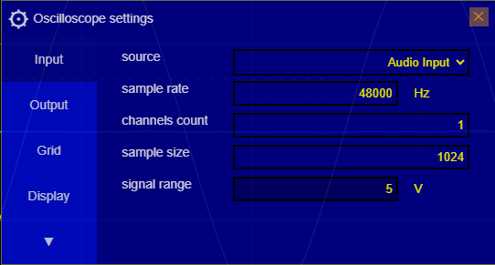
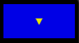

Sound card Oscilloscope / Generator Manual: Introduction
Index
Calibration
The built-in microphone of a PC (often located near the webcam) has specific electrical and acoustic properties
related to its general use.
Here are the main characteristics:
- Type of transducer: Most PC microphones are of the
electret type (permanently polarized condenser), powered by a polarization voltage
typically
between 2
and
5 V
supplied by the sound card via the jack or USB input.
- Input impedance: Typically between 1 kΩ and 10 kΩ, which
is suitable for a standard audio interface. This allows for good matching with the input circuits of sound
cards.
- Sensitivity and bandwidth:
- Sensitivity: around
–40 to –60 dBV/Pa, which means they pick up
close sounds well
but are limited for weak or distant signals.
- Bandwidth: usually 100 Hz to 10 kHz,
sufficient for voice but limited
for high-fidelity audio applications or precise measurements.
👉 Thus you must setup the software with the actual peak volts
values your sound card is
setted up for, in order to read the actual Volt values on the oscilloscope.
That means to know wich is the Voltage value for the maximum and minimum digital value, according to the bit
sample resolution (0..2^n-1)
How to calibrate the intput peak Volt values
Click on the button Settings
on the right menu (oscilloscope menu), then on the tab
Input:

ℹ️information: If the right menu is not visible, click on the upper top right button
Toggle menu
 to
expand it.
Click the field Signal Range and then setup the value using the input widget. This is the polarized
pick value, meaning a range of -value .. +value